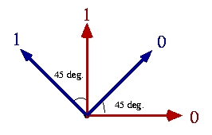

The BB84 Quantum Coding Scheme
The BB84 quantum coding scheme was the first proposed
quantum encoding of classical information in such a way that the
receiver (legitimate or illegitimate) cannot recover with 100% reliability.
It is the basic tool most of the quantum protocols are based upon (see
Bennet, Brassard, "The use of WWWW",JournalXX).
The BB84 coding scheme makes a correspondance between
classical bits and quantum states. Each classical bits corresponds to a
mixture of two equally likely non-orthogonal quantum states. One representation
looks like:

and we denote by |0>,
|1>,
|0>,
and
|1> the four states depicted
in the picture.
The usual way to encode information to be sent over the
quantum channel is by the transmission of photons in some polarization
states. The direction of the polarization encodes a classical bit. In the
BB84 coding scheme, the classical bit 0 is encoded either by a photon with
horizontal polarization or by a photon with polarization at 45degrees of
the horizontal direction. The classical bit 1 is encoded by either
a photon with polarization along the vertical direction or by a photon
polarized at an angle of 135 degrees with the horizontal direction.
According to quantum mechanics, it is impossible to distinguish
with certainty two non-orthogonal quantum states. In order to distinguish,
a quantum measurement must be performed providing a classical output trying
to identify the received state. Follow this link for more information about
quantum
measurements. The obliviousness of the transmitted information provides
the cryptographic properties needed in quantum cryptography.
The following measurements will be used for the description
of the BB84 coding scheme described below:
-
"+"
denotes the Von Neumann measurement allowing to distinguish perfectly between
|0>
and |1>.
This measurement is also called measurement in the rectilinear basis.
-
"x"
denotes the Von Neumann measurement allowing to distinguish perfectly between
|0>
and |1>.
This measurement is also called measurement in the diagonal basis.
BB84 Quantum Transmission
The BB84 quantum transmission is a standard cryptographic
and quantum primitive that can be used in different kind of protocols.
Quantum key distribution using BB84 quantum transmission enjoys good cryptographic
properties making it more secure but more difficult to implement than the
B92
quantum transmission. The BB84 transmission sonsists simply in
the transmission of n random BB84 qubits from Alice to Bob. Bob
measures each qubit he received by picking randomly a measurement in the
rectilinear or the diagonal. Alice's output of the transmission is a pair
(b,t)
of the classical bits b and the bases t used for preparing
the received qubits. Bob's output is a pair (b',t') of the
classical bits describing the bits obtained b' after the measurements
t'.
Alice's input : n
(the
length of the resulting transmission)
Bob's input
: n
Alice's output: (b,t)
(the
bits and bases transmitted)
Bob's output
: (b',t') (the bits and the bases obtained)
-
m = 0
-
While m < ndo:
-
Alice picks bm randomly in {0,1}
-
Alice picks tm randomly in {+,X}
-
Bob picks t'm random in {+,X}
-
if tm = +
then Alice sends |bm> to
Bob
-
if tm = X
then Alice sends |bm> to
Bob
-
Bob measures the incoming qubit in basis t'm:
-
if Bob detects 0 then b'm=0, m=m+1,
and tells Alice "detection"
-
If Bob detects 1 then b'm=1, m=m+1,
and tells Alice "detection"
-
if Bob detects nothing then he tells Alice "no
detection"
-
Alice's output (b=b1b2...bn,t=t1t2...tn)
-
Bob's output (b'=b'1b'2...b'n,t'=t'1t'2...t'n)
The way the BB84 quantum transmission has been implemented
can be seen here.
Simple Observations
The BB84 quantum transmission has the following properties
(over perfect quantum channels) that can be used to enforce the security
of quantum key distribution:
-
If for the qubit in position i we have that t'i=ti
then b'i=bi ,
-
If for the qubit in position i we have that
t'i<>ti
then
Pr{b'i=bi}=1/2.
Quantum key distribution produces a secret-key from the positions
i
for
which t'i=ti. Moreover, if an eavesdropper
tries to get information about bi then the result will
be that Pr{b'i=bi}<<1 which can be detected
by Alice and Bob.
The best measurement for extracting as much information
as possible about bi is the measurement in the Breidbart
basis: {cos(¶/8)|0>
+ sin(¶/8)|1>,
-sin(¶/8)|0>
+ cos(¶/8)|1>}.
Using the Breidbart measurement one can get the right bit with probability
cos2(¶/8)
which is about 85%.